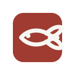
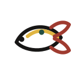
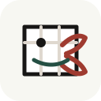
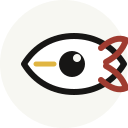
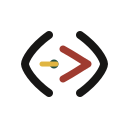
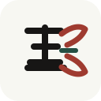
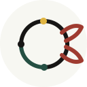
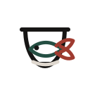

个人印记
适合头像、favicon、微信名片。目标是让别人记住“这是金鱼”，而不是记住一条鱼。
Huashu-Design pass 2
上一轮太像“画了一条小鱼”。这轮改成标识系统：有些只留水纹，有些做成印记，有些把金鱼和路径、工作台、观察判断绑在一起。
适合头像、favicon、微信名片。目标是让别人记住“这是金鱼”，而不是记住一条鱼。
把咨询工作里的拆解、回环、找方向放进符号里。更理性，也更像顾问。
呼应网站里的“产品、页面、供应商、工具摆到桌上”。更贴近你现在的首页叙事。

不画鱼，只留水纹、眼睛和一笔尾巴。安静，适合你现在这个白底网站。

最像个人印记。它不软，也不幼稚；放在名片、页脚、封面上都压得住。

把“梳理路径”放进鱼形里。比上一轮更像咨询网站，不像动物头像。

最贴首页那句“先把问题摆到桌上”。如果你想让 logo 带一点方法论，这个方向值得留。

把金鱼的“看”放大。适合强调判断力，但会比其他方案更有视觉冲击。

像对话，也像把一个问题括起来。它没那么像鱼，但更像“咨询关系”。

从“金”字做记号，鱼尾只是暗线。它更像私人章，不像品牌吉祥物。

适合你讲产品、供应商、内容、渠道一起看的定位。缺点是偏工具，不够亲近。

比直接画鱼更安静，也有“金鱼”联想。适合网站，但可能稍微生活方式了一点。
把资料、样品、页面和尾鳍叠在一起。很贴咨询工作，但做主 logo 可能信息太多。
如果这套网站继续走克制、真实、个人顾问的方向，我会优先看 02、06、07。02 最像个人 IP，06 最有咨询关系感，07 最像一个能长期用的中文私章。